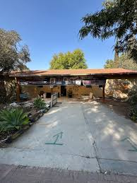
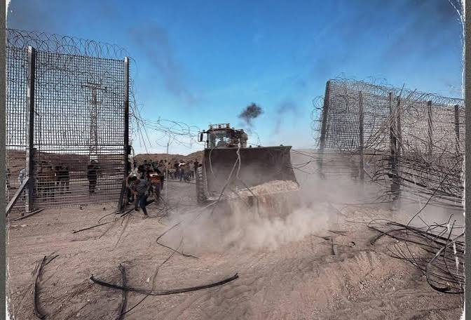
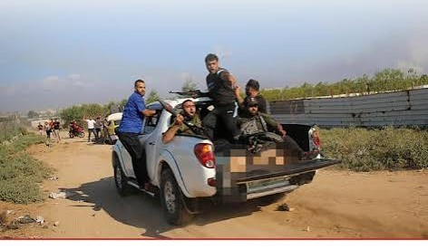

The events of October 7, 2023 involved many different groups, organizations, soldiers, civilians, and political leaders. The attack was led by Hamas and involved armed groups that entered southern Israel from the Gaza Strip.
Hamas is a Palestinian Islamist political and armed organization that has controlled the Gaza Strip since 2007. Hamas led the October 7 attack and was responsible for many of the armed forces that entered Israel that day.
The Israel Defense Forces (IDF) were involved in responding to the attack. Israeli soldiers and security forces fought the attackers, protected communities, and worked to rescue civilians and hostages.
Thousands of civilians were directly affected by the events. People living in communities near the Gaza border were attacked, while others were forced to leave their homes. Civilians were also among those who were killed, injured, or taken hostage.
Israeli political leaders, including Prime Minister Benjamin Netanyahu, became central figures during the war that followed. Palestinian political leaders and international leaders were also involved in the diplomatic and political response to the events.


